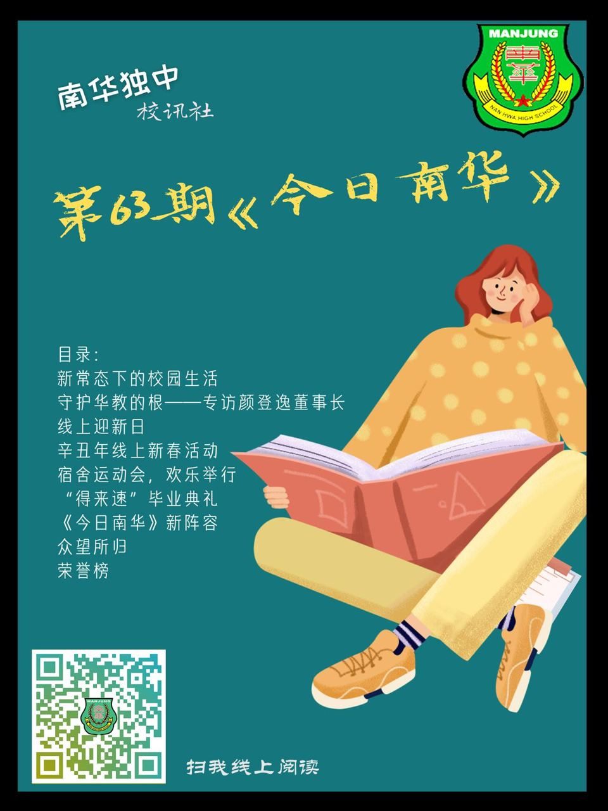

经过半年的酝酿与筹备，第63期《今日南华》终于顺利出版面世。本期校刊的主题为“新
经过半年的酝酿与筹备，第63期《今日南华》终于顺利出版面世。本期校刊的主题为“新常态下的校园生活”，内容收录了本校南华独中师生的线上问卷调查结果，并专访了部分行政单位与师生。此外，2021上半年虽然动荡不安，然而南华独中仍然克服重重困难，举办了好几场别树一帜的校园活动，本刊能够见证并且记录下点点滴滴，实在与有荣焉。精彩的内容，还请大家翻阅本刊，细细品味。
第63期《今日南华》首次以电子刊物的形式呈现予大家，如有不便及错误之处，还请多多见谅。
PDF下载链接：https://urlzs.com/qpdG6
在线阅读链接：https://anyflip.com/nrlqq/ejpw/
有请各位协助分享与宣传。情系南华，感恩有您。
